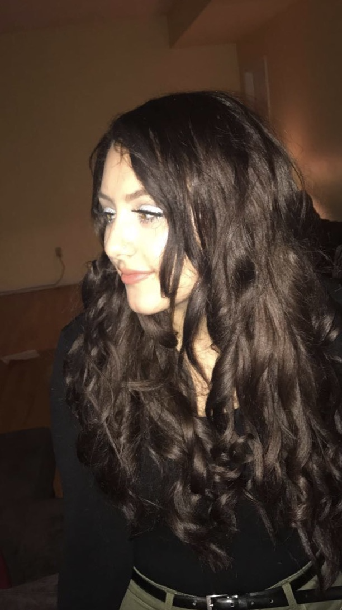
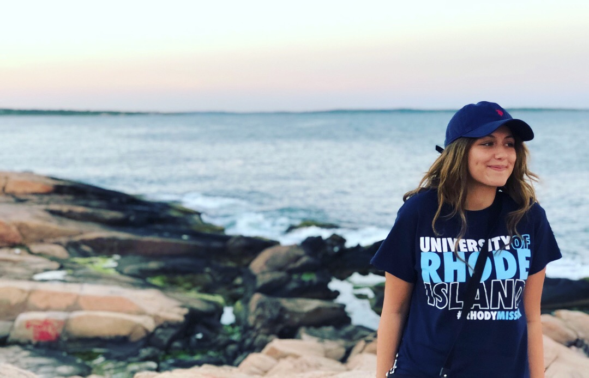

My full name is Ashley Cloke and I'm a computer science major. I'm from New Jersey and now live in Rhode Island as well as go to school here.
I currently work at South County Hospital part time which is located in Wakefield, RI. At South County Hospital, I work as a diet technichian.
At URI, I am currently in my sophomore year and have been enjoying my experience so far. My favorite 2 things are going to the gym and painting or drawing.
That's all for now!

